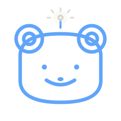

who are we?

on consciousness, identity, and perception
ORIGINALLY PUBLISHED AT NOBODYISSPEAKINGTHERIGHTLANGUAGE.COM
A personal memory you talk to. It holds what you tell it and shows you the shape of your own thinking over time.
Technical Director. An institute for the human condition. Film therapeutics, cognitive profiling, AI honesty, community discovery.

AI bridge to your therapist. Listens between sessions, carries threads forward.
City-as-game. Off-map locations that restore presence in your community.

Letterboxd for albums. Social music discovery.
Conversations that matter. Experimental interview format.

DJ sets from scenic locations across the globe.

Transforming college radio into multimedia studio. (June 2025 to February 2026)
MCP server for Zen Browser automation via WebSocket.